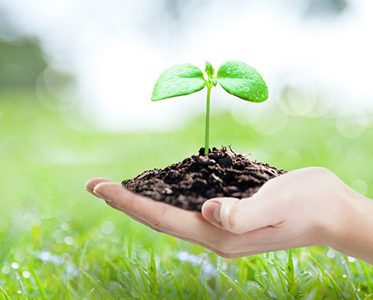

Environment-Friendly Industry
- Home
- Investment Environment
- Promising Industries
- Environment-Friendly Industry
Environment-Friendly Industry


Today, our society is witnessing changes to existing industrial structures and the ways of business operation as well as to our daily lives due to climate change and environmental degradation. In response, increasingly higher numbers of conscious consumers are trying to prevent the reckless waste of resources and instead consume environmentally friendly products. The sentiment is also growing that businesses should focus more on environmental protection and assume social responsibility.
Recently, more businesses in Jeju have striven to adopt new business models to meet the demands of such consumers and secure a share of the ethical consumption market. This is because the environmental and social responsibility of businesses constitutes a prerequisite for sustainable management and a new competitive edge in this era of climate change.
Jeju Island, which achieved UNESCO’s coveted “triple crown” and gained high recognition in the Asian market, will be an ideal location for investment for environmentally conscious and ethical businesses.
Upcycling Industry
“Recycling for Rebirth”
Jeju Recycling System Development Project
Jeju Recycling System Development Project
Pleats Mama, making an eco-friendly bag with sisteen 500-milliliter Samdasoo PET bottles
Korean recycling brand Pleats Mama has worked together with Hyosung TNC and Jeju Island to manufacture Korea’s first recycled products made from 100% Jeju Samdasoo PET bottles, drawing attention from the market.
The “Recycling for Rebirth” project aims to build a resource recycling system in the Jeju area. Hyosung TNC, which posesses technology for producing recycled polyester fabric, turns reclaimed Jeju Samdasoo PET bottles into a recycled fabric named Regen Jeju. Then, eco-friendly bag manufacturing startup Pleats Mama produces end products using the recycled fabric.
※ Regen Jeju: Korea’s first recycled polyester made from 100% PET bottle waste in Jeju
※ Creora Regen: World’s first 100% recycled spandex
※ Creora Regen: World’s first 100% recycled spandex
-
Rucksack
-
Big Bag